pacman::p_load(sf, terra, spatstat,
tmap, rvest, tidyverse)Hands-on Exercise 2: Thematic Mapping and GeoVisualisation with R
mpsz_sf = st_read("data/geospatial/MasterPlan2019SubzoneBoundaryNoSeaGEOJSON.geojson") %>%
st_zm(drop = TRUE, what = "ZM") %>%
st_transform(crs = 3414)Reading layer `URA_MP19_SUBZONE_NO_SEA_PL' from data source
`D:\1.Abinav\1.SMU\Term 4\Geospatial Analysis\Abinav0905\GAA-Abinav-Test\Hands_on_Ex\Hands_onEx02\data\geospatial\MasterPlan2019SubzoneBoundaryNoSeaGEOJSON.geojson'
using driver `GeoJSON'
Simple feature collection with 332 features and 13 fields
Geometry type: MULTIPOLYGON
Dimension: XY
Bounding box: xmin: 103.6057 ymin: 1.158699 xmax: 104.0885 ymax: 1.470775
Geodetic CRS: WGS 84childcare_sf = st_read("data/aspatial/ChildCareServices.geojson") %>%
st_zm(drop = TRUE, what = "ZM") %>%
st_transform(crs = 3414)Reading layer `CHILDCARE' from data source
`D:\1.Abinav\1.SMU\Term 4\Geospatial Analysis\Abinav0905\GAA-Abinav-Test\Hands_on_Ex\Hands_onEx02\data\aspatial\ChildCareServices.geojson'
using driver `GeoJSON'
Simple feature collection with 1925 features and 16 fields
Geometry type: POINT
Dimension: XY
Bounding box: xmin: 103.6878 ymin: 1.247759 xmax: 103.9897 ymax: 1.462134
Geodetic CRS: WGS 84glimpse(mpsz_sf)Rows: 332
Columns: 14
$ OBJECTID <int> 676, 677, 678, 679, 680, 681, 682, 683, 684, 685, 686, 641,…
$ SUBZONE_NO <int> 12, 2, 3, 4, 5, 4, 10, 12, 4, 6, 1, 13, 1, 5, 1, 1, 2, 1, 3…
$ SUBZONE_N <chr> "DEPOT ROAD", "BUKIT MERAH", "CHINATOWN", "PHILLIP", "RAFFL…
$ SUBZONE_C <chr> "BMSZ12", "BMSZ02", "OTSZ03", "DTSZ04", "DTSZ05", "OTSZ04",…
$ CA_IND <chr> "N", "N", "Y", "Y", "Y", "Y", "N", "Y", "N", "Y", "Y", "Y",…
$ PLN_AREA_N <chr> "BUKIT MERAH", "BUKIT MERAH", "OUTRAM", "DOWNTOWN CORE", "D…
$ PLN_AREA_C <chr> "BM", "BM", "OT", "DT", "DT", "OT", "BM", "DT", "BM", "DT",…
$ REGION_N <chr> "CENTRAL REGION", "CENTRAL REGION", "CENTRAL REGION", "CENT…
$ REGION_C <chr> "CR", "CR", "CR", "CR", "CR", "CR", "CR", "CR", "CR", "CR",…
$ INC_CRC <chr> "C22DED671DE2A940", "085EF219A5A1AEAD", "EF2B9A91AF49E025",…
$ FMEL_UPD_D <chr> "20191223152313", "20191223152313", "20191223152313", "2019…
$ SHAPE.AREA <dbl> 442297.51, 411722.83, 587222.68, 39437.94, 188767.49, 13300…
$ SHAPE.LEN <dbl> 4281.6673, 3074.9632, 4297.5999, 871.5549, 1872.7522, 1605.…
$ geometry <MULTIPOLYGON [m]> MULTIPOLYGON (((25910.34 29..., MULTIPOLYGON (…glimpse(childcare_sf)Rows: 1,925
Columns: 17
$ OBJECTID <int> 24744, 24745, 24746, 24747, 24748, 24749, 2475…
$ ADDRESSBLOCKHOUSENUMBER <chr> NA, NA, NA, NA, NA, NA, NA, NA, NA, NA, NA, NA…
$ ADDRESSBUILDINGNAME <chr> NA, NA, NA, NA, NA, NA, NA, NA, NA, NA, NA, NA…
$ ADDRESSPOSTALCODE <chr> "467903", "768019", "650165", "103104", "44929…
$ ADDRESSSTREETNAME <chr> "44, LIMAU GARDEN, BEDOK PARK, SINGAPORE 46790…
$ ADDRESSTYPE <chr> NA, NA, NA, NA, NA, NA, NA, NA, NA, NA, NA, NA…
$ DESCRIPTION <chr> "Child Care Services", "Child Care Services", …
$ HYPERLINK <chr> NA, NA, NA, NA, NA, NA, NA, NA, NA, NA, NA, NA…
$ LANDXADDRESSPOINT <chr> NA, NA, NA, NA, NA, NA, NA, NA, NA, NA, NA, NA…
$ LANDYADDRESSPOINT <chr> NA, NA, NA, NA, NA, NA, NA, NA, NA, NA, NA, NA…
$ NAME <chr> "APOLLO INTERNATIONAL PRESCHOOL PRIVATE LIMITE…
$ PHOTOURL <chr> NA, NA, NA, NA, NA, NA, NA, NA, NA, NA, NA, NA…
$ ADDRESSFLOORNUMBER <chr> NA, NA, NA, NA, NA, NA, NA, NA, NA, NA, NA, NA…
$ INC_CRC <chr> "0A2D85D9BC6DA78E", "BD725D1719396336", "FF040…
$ FMEL_UPD_D <chr> "20211201093837", "20211201093837", "202112010…
$ ADDRESSUNITNUMBER <chr> NA, NA, NA, NA, NA, NA, NA, NA, NA, NA, NA, NA…
$ geometry <POINT [m]> POINT (40985.94 33848.38), POINT (28308.…mpsz_cl = mpsz_sf %>%
filter(SUBZONE_N != "SOUTHERN GROUP",
PLN_AREA_N != "WESTERN ISLANDS",
PLN_AREA_N != "NORTH-EASTERN ISLANDS")write_rds(mpsz_cl, "data/rds/mpsz_cl.rds")plot(st_geometry(mpsz_cl))
plot(st_geometry(childcare_sf), add = TRUE, col = "red", pch = 19, cex = 0.5)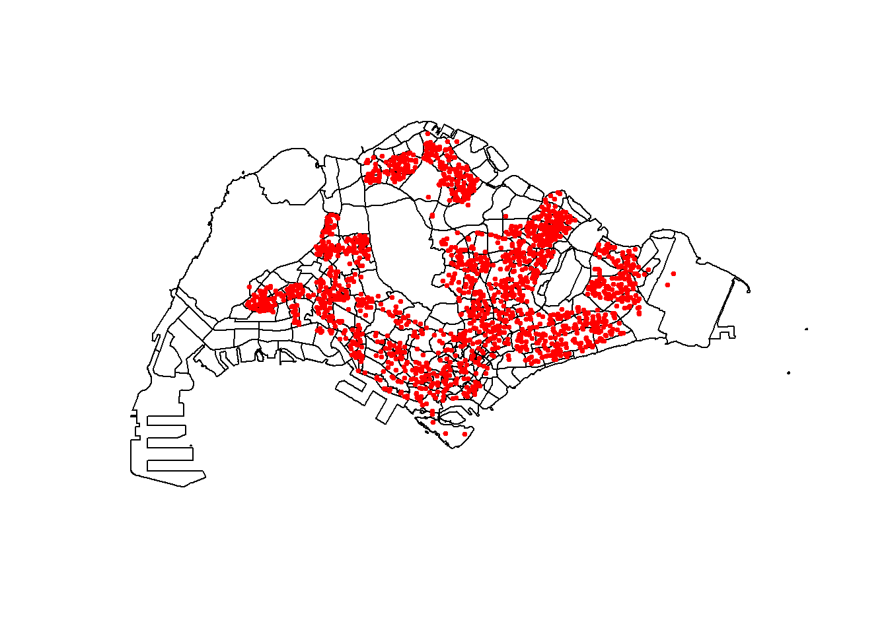
childcare_ppp = as.ppp(childcare_sf)
class(childcare_ppp)[1] "ppp"summary(childcare_ppp)Marked planar point pattern: 1925 points
Average intensity 2.417323e-06 points per square unit
Coordinates are given to 11 decimal places
Mark variables: OBJECTID, ADDRESSBLOCKHOUSENUMBER, ADDRESSBUILDINGNAME,
ADDRESSPOSTALCODE, ADDRESSSTREETNAME, ADDRESSTYPE, DESCRIPTION, HYPERLINK,
LANDXADDRESSPOINT, LANDYADDRESSPOINT, NAME, PHOTOURL, ADDRESSFLOORNUMBER,
INC_CRC, FMEL_UPD_D, ADDRESSUNITNUMBER
Summary:
OBJECTID ADDRESSBLOCKHOUSENUMBER ADDRESSBUILDINGNAME ADDRESSPOSTALCODE
Min. :24641 Length :1925 Length :1925 Length :1925
1st Qu.:25122 N.unique : 0 N.unique : 0 N.unique :1739
Median :25603 N.blank : 0 N.blank : 0 N.blank : 0
Mean :25603 Min.nchar: NA Min.nchar: NA Min.nchar: 5
3rd Qu.:26084 Max.nchar: NA Max.nchar: NA Max.nchar: 6
Max. :26565 NAs :1925 NAs :1925
ADDRESSSTREETNAME ADDRESSTYPE DESCRIPTION HYPERLINK
Length :1925 Length :1925 Length :1925 Length :1925
N.unique :1923 N.unique : 0 N.unique : 1 N.unique : 0
N.blank : 0 N.blank : 0 N.blank : 0 N.blank : 0
Min.nchar: 25 Min.nchar: NA Min.nchar: 19 Min.nchar: NA
Max.nchar: 100 Max.nchar: NA Max.nchar: 19 Max.nchar: NA
NAs :1925 NAs :1925
LANDXADDRESSPOINT LANDYADDRESSPOINT NAME PHOTOURL
Length :1925 Length :1925 Length :1925 Length :1925
N.unique : 0 N.unique : 0 N.unique :1572 N.unique : 0
N.blank : 0 N.blank : 0 N.blank : 0 N.blank : 0
Min.nchar: NA Min.nchar: NA Min.nchar: 9 Min.nchar: NA
Max.nchar: NA Max.nchar: NA Max.nchar: 74 Max.nchar: NA
NAs :1925 NAs :1925 NAs :1925
ADDRESSFLOORNUMBER INC_CRC FMEL_UPD_D ADDRESSUNITNUMBER
Length :1925 Length :1925 Length :1925 Length :1925
N.unique : 0 N.unique :1925 N.unique : 1 N.unique : 0
N.blank : 0 N.blank : 0 N.blank : 0 N.blank : 0
Min.nchar: NA Min.nchar: 16 Min.nchar: 14 Min.nchar: NA
Max.nchar: NA Max.nchar: 16 Max.nchar: 14 Max.nchar: NA
NAs :1925 NAs :1925
Window: rectangle = [11810.03, 45404.24] x [25596.33, 49300.88] units
(33590 x 23700 units)
Window area = 796335000 square unitssg_owin = as.owin(mpsz_cl)
class(sg_owin)[1] "owin"plot(sg_owin)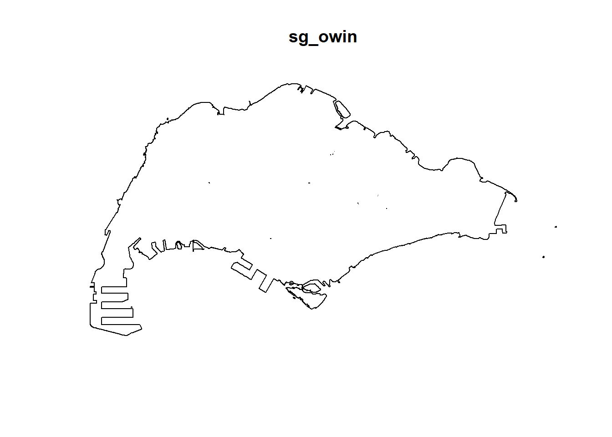
childcareSG_ppp = childcare_ppp[sg_owin]
childcareSG_pppMarked planar point pattern: 1925 points
Mark variables:
OBJECTID ADDRESSBLOCKHOUSENUMBER ADDRESSBUILDINGNAME ADDRESSPOSTALCODE
ADDRESSSTREETNAME ADDRESSTYPE DESCRIPTION HYPERLINK LANDXADDRESSPOINT
LANDYADDRESSPOINT NAME PHOTOURL ADDRESSFLOORNUMBER INC_CRC FMEL_UPD_D
ADDRESSUNITNUMBER
window: polygonal boundary
enclosing rectangle: [2667.54, 55941.94] x [21448.47, 50256.33] unitsclarkevans.test(childcareSG_ppp,
correction="none",
clipregion="sg_owin",
alternative=c("clustered"))
Clark-Evans test
No edge correction
Z-test
data: childcareSG_ppp
R = 0.53532, p-value < 2.2e-16
alternative hypothesis: clustered (R < 1)The result here is clear, R is under 1, meaning the childcare centres are clustered rather than spread out randomly. Not surprising when you think about it, since childcare centres tend to open up near where families actually live, so they naturally bunch up around residential estates.
clarkevans.test(childcareSG_ppp,
correction="none",
clipregion="sg_owin",
alternative=c("clustered"),
method="MonteCarlo",
nsim=99)
Clark-Evans test
No edge correction
Monte Carlo test based on 99 simulations of CSR with fixed n
data: childcareSG_ppp
R = 0.53532, p-value = 0.01
alternative hypothesis: clustered (R < 1)Same conclusion holds even with the Monte Carlo simulation approach - p value is still well under 0.05, so we can be confident this clustering isn’t just random noise.
kde_SG_diggle = density(
childcareSG_ppp,
sigma=bw.diggle,
edge=TRUE,
kernel="gaussian")
plot(kde_SG_diggle)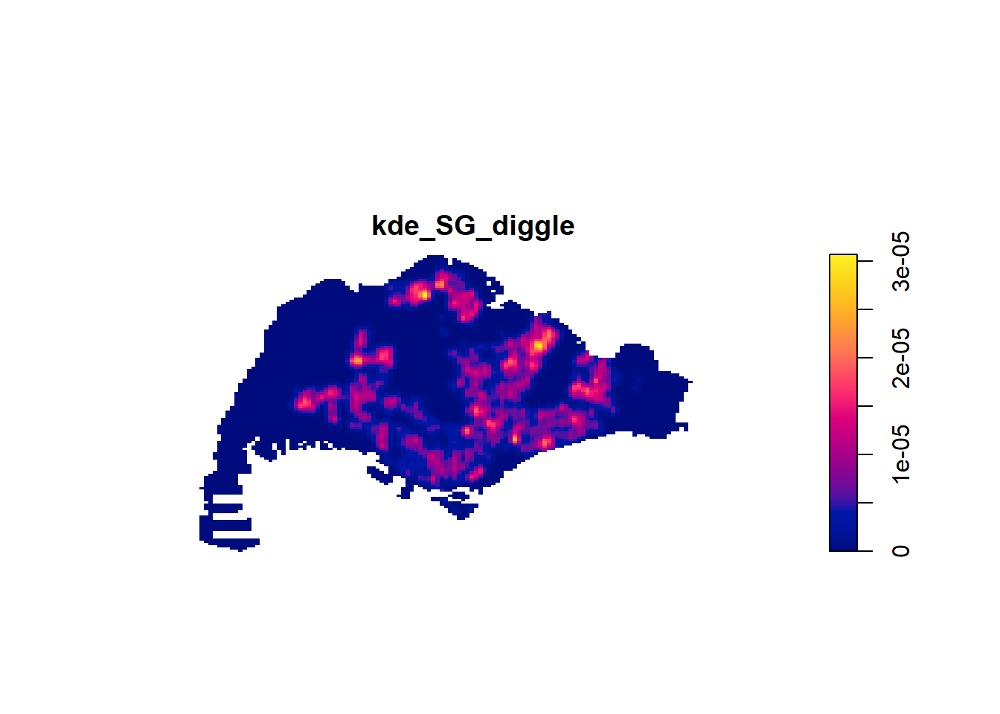
summary(kde_SG_diggle)real-valued pixel image
128 x 128 pixel array (ny, nx)
enclosing rectangle: [2667.538, 55941.94] x [21448.47, 50256.33] units
dimensions of each pixel: 416 x 225.0614 units
Image is defined on a subset of the rectangular grid
Subset area = 669941961.12307 square units
Subset area fraction = 0.437
Pixel values (inside window):
range = [-5.405685e-21, 3.063698e-05]
integral = 1927.788
mean = 2.877545e-06bw = bw.diggle(childcareSG_ppp)
bw sigma
295.9712 childcareSG_ppp_km = rescale.ppp(
childcareSG_ppp, 1000, "km")
kde_childcareSG_km = density(childcareSG_ppp_km,
sigma=bw.diggle,
edge=TRUE,
kernel="gaussian")
plot(kde_childcareSG_km)bw.CvL(childcareSG_ppp_km) sigma
4.357209 bw.scott(childcareSG_ppp_km) sigma.x sigma.y
2.159749 1.396455 bw.ppl(childcareSG_ppp_km) sigma
0.378997 bw.diggle(childcareSG_ppp_km) sigma
0.2959712 Each method gives a pretty different bandwidth value, which honestly makes sense once you realize they’re each making a different tradeoff between smoothness and detail. bw.diggle tends to zoom in more on tight clusters, while the others smooth things out more.
kde_childcareSG.ppl = density(childcareSG_ppp_km,
sigma=bw.ppl,
edge=TRUE,
kernel="gaussian")
par(mfrow=c(1,2))
plot(kde_childcareSG_km, main = "bw.diggle")
plot(kde_childcareSG.ppl, main = "bw.ppl")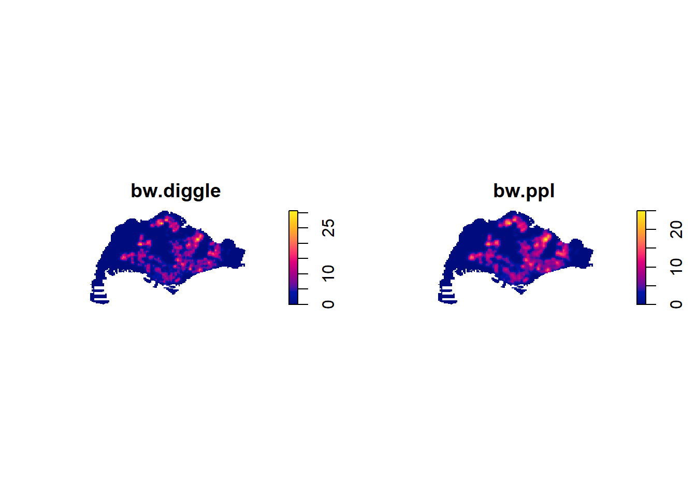
par(mar = c(2,2,2,2))
par(mfrow=c(2,2))
plot(density(childcareSG_ppp_km,
sigma=0.2959712,
edge=TRUE,
kernel="gaussian"),
main="Gaussian")
plot(density(childcareSG_ppp_km,
sigma=0.2959712,
edge=TRUE,
kernel="epanechnikov"),
main="Epanechnikov")
plot(density(childcareSG_ppp_km,
sigma=0.2959712,
edge=TRUE,
kernel="quartic"),
main="Quartic")
plot(density(childcareSG_ppp_km,
sigma=0.2959712,
edge=TRUE,
kernel="disc"),
main="Disc")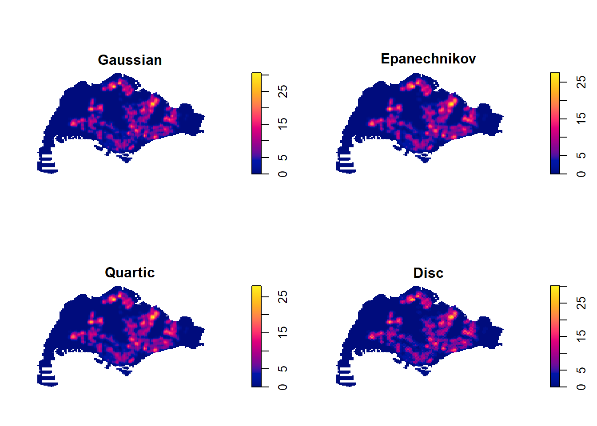
Not a huge visual difference between the four kernel shapes here - gaussian is the default for a reason, it gives a nice smooth result without looking too blocky or too sharp.
kde_childcareSG_fb = density(childcareSG_ppp_km,
sigma=0.6,
edge=TRUE,
kernel="gaussian")
plot(kde_childcareSG_fb)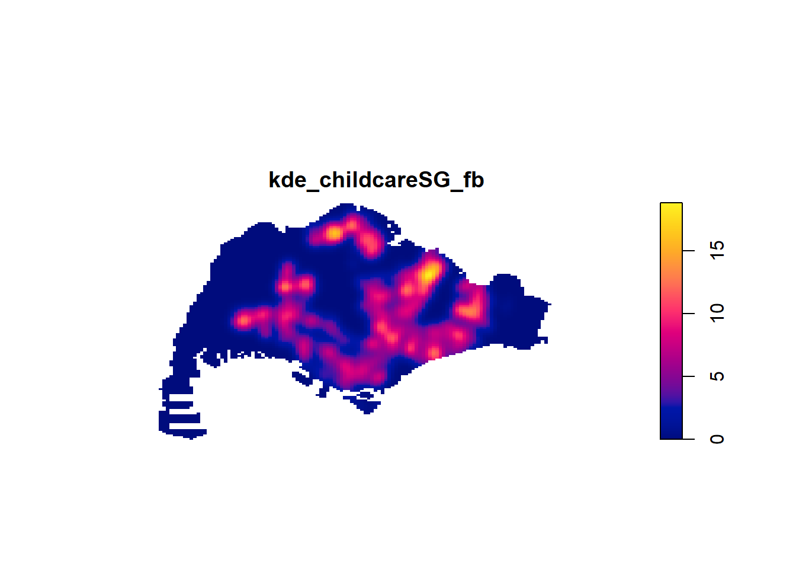
kde_childcareSG_ab = adaptive.density(
childcareSG_ppp_km,
method="kernel")
plot(kde_childcareSG_ab)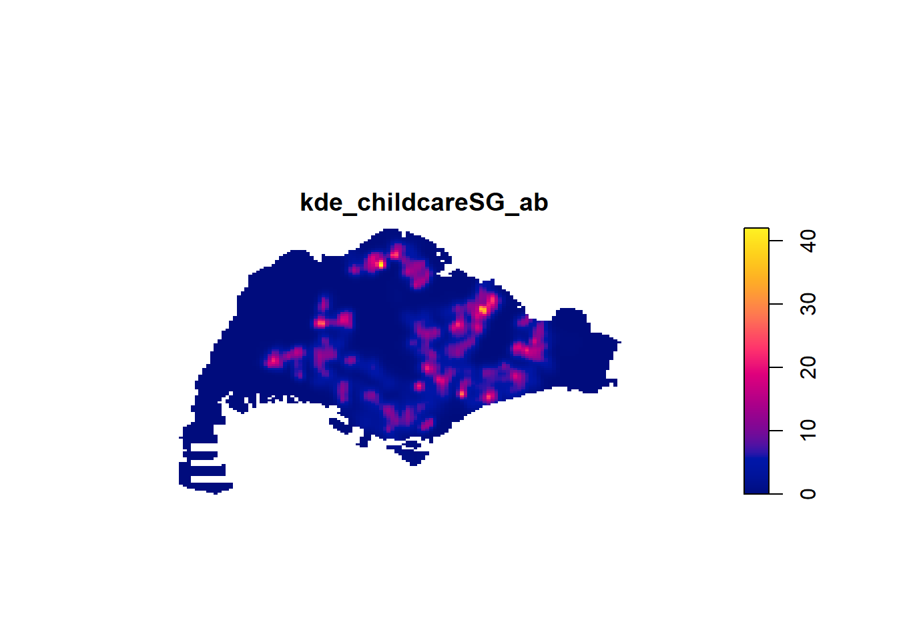
par(mfrow=c(1,2))
plot(kde_childcareSG_fb, main = "Fixed bandwidth")
plot(kde_childcareSG_ab, main = "Adaptive bandwidth")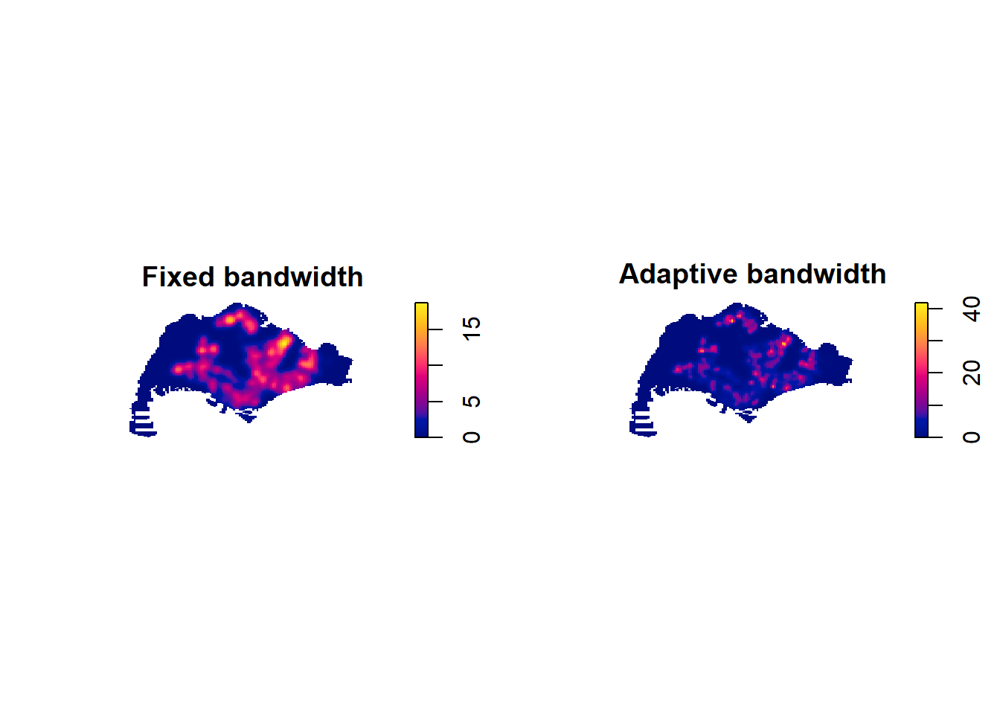
The adaptive version does a better job in areas where childcare centres are really tightly packed - it picks up on local density changes that the fixed bandwidth just smooths over.
kde_childcareSG_bw_terra = rast(kde_childcareSG_km)
class(kde_childcareSG_bw_terra)[1] "SpatRaster"
attr(,"package")
[1] "terra"kde_childcareSG_bw_terraclass : SpatRaster
size : 128, 128, 1 (nrow, ncol, nlyr)
resolution : 0.4162063, 0.2250614 (x, y)
extent : 2.667538, 55.94194, 21.44847, 50.25633 (xmin, xmax, ymin, ymax)
coord. ref. :
source(s) : memory
name : lyr.1
min value : -0
max value : 30.636981
unit : kmcrs(kde_childcareSG_bw_terra) = "EPSG:3414"
kde_childcareSG_bw_terraclass : SpatRaster
size : 128, 128, 1 (nrow, ncol, nlyr)
resolution : 0.4162063, 0.2250614 (x, y)
extent : 2.667538, 55.94194, 21.44847, 50.25633 (xmin, xmax, ymin, ymax)
coord. ref. : SVY21 / Singapore TM (EPSG:3414)
source(s) : memory
name : lyr.1
min value : -0
max value : 30.636981
unit : kmtm_shape(kde_childcareSG_bw_terra) +
tm_raster(col.scale =
tm_scale_continuous(
values = "viridis"),
col.legend = tm_legend(
title = "Density values",
title.size = 0.7,
text.size = 0.7,
bg.color = "white",
bg.alpha = 0.7,
position = tm_pos_in(
"right", "bottom"),
frame = TRUE)) +
tm_graticules(labels.size = 0.7) +
tm_compass() +
tm_layout(scale = 1.0)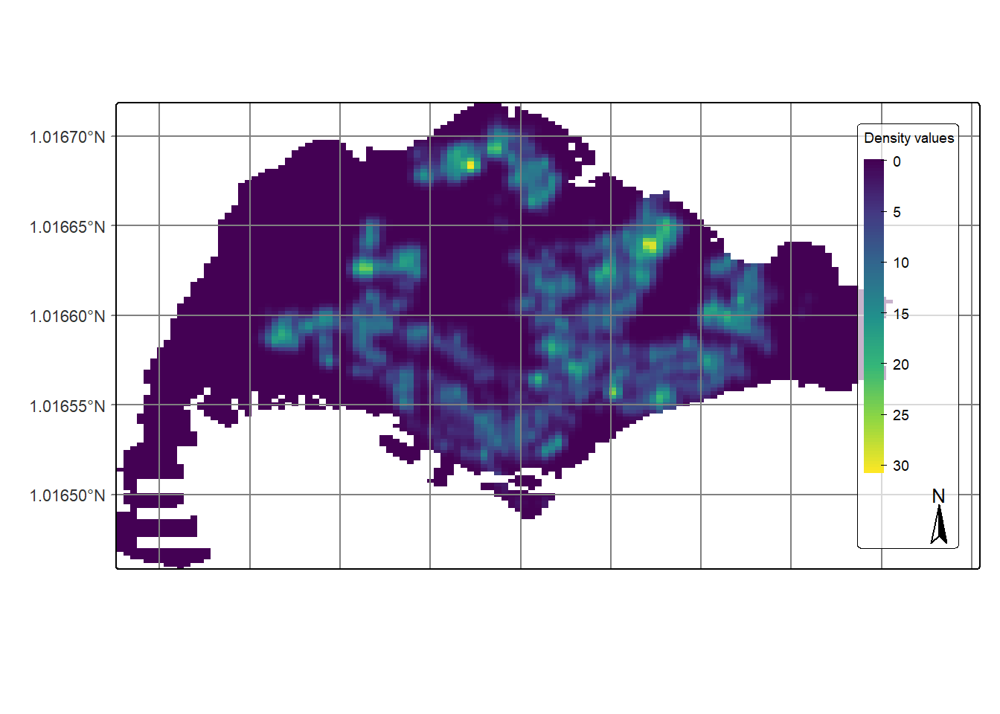
pg = mpsz_cl %>%
filter(PLN_AREA_N == "PUNGGOL")
tm = mpsz_cl %>%
filter(PLN_AREA_N == "TAMPINES")
ck = mpsz_cl %>%
filter(PLN_AREA_N == "CHOA CHU KANG")
jw = mpsz_cl %>%
filter(PLN_AREA_N == "JURONG WEST")
par(mar = c(2,2,2,2))
par(mfrow=c(2,2))
plot(st_geometry(pg), main = "Ponggol")
plot(st_geometry(tm), main = "Tampines")
plot(st_geometry(ck), main = "Choa Chu Kang")
plot(st_geometry(jw), main = "Jurong West")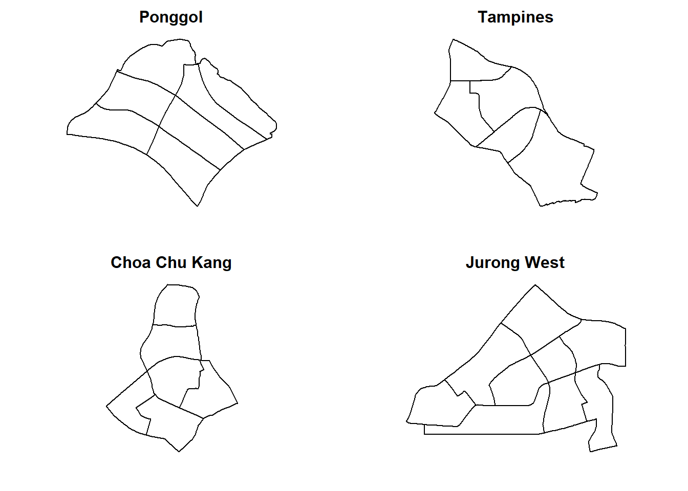
pg = mpsz_cl %>%
filter(PLN_AREA_N == "PUNGGOL")
tm = mpsz_cl %>%
filter(PLN_AREA_N == "TAMPINES")
ck = mpsz_cl %>%
filter(PLN_AREA_N == "CHOA CHU KANG")
jw = mpsz_cl %>%
filter(PLN_AREA_N == "JURONG WEST")
pg_owin = as.owin(pg)
tm_owin = as.owin(tm)
ck_owin = as.owin(ck)
jw_owin = as.owin(jw)
childcare_pg_ppp = childcare_ppp[pg_owin]
childcare_tm_ppp = childcare_ppp[tm_owin]
childcare_ck_ppp = childcare_ppp[ck_owin]
childcare_jw_ppp = childcare_ppp[jw_owin]clarkevans.test(childcare_ck_ppp,
correction="none",
clipregion=NULL,
alternative=c("two.sided"),
nsim=999)
Clark-Evans test
No edge correction
Z-test
data: childcare_ck_ppp
R = 0.84097, p-value = 0.008866
alternative hypothesis: two-sidedclarkevans.test(childcare_tm_ppp,
correction="none",
clipregion=NULL,
alternative=c("two.sided"),
nsim=999)
Clark-Evans test
No edge correction
Z-test
data: childcare_tm_ppp
R = 0.66817, p-value = 6.58e-12
alternative hypothesis: two-sidedchildcare_pg_ppp.km = rescale.ppp(childcare_pg_ppp, 1000, "km")
childcare_tm_ppp.km = rescale.ppp(childcare_tm_ppp, 1000, "km")
childcare_ck_ppp.km = rescale.ppp(childcare_ck_ppp, 1000, "km")
childcare_jw_ppp.km = rescale.ppp(childcare_jw_ppp, 1000, "km")par(mar = c(2,2,2,2))
par(mfrow=c(2,2))
plot(density(childcare_pg_ppp.km,
sigma=bw.diggle,
edge=TRUE,
kernel="gaussian"),
main="Punggol")
plot(density(childcare_tm_ppp.km,
sigma=bw.diggle,
edge=TRUE,
kernel="gaussian"),
main="Tempines")
plot(density(childcare_ck_ppp.km,
sigma=bw.diggle,
edge=TRUE,
kernel="gaussian"),
main="Choa Chu Kang")
plot(density(childcare_jw_ppp.km,
sigma=bw.diggle,
edge=TRUE,
kernel="gaussian"),
main="Jurong West")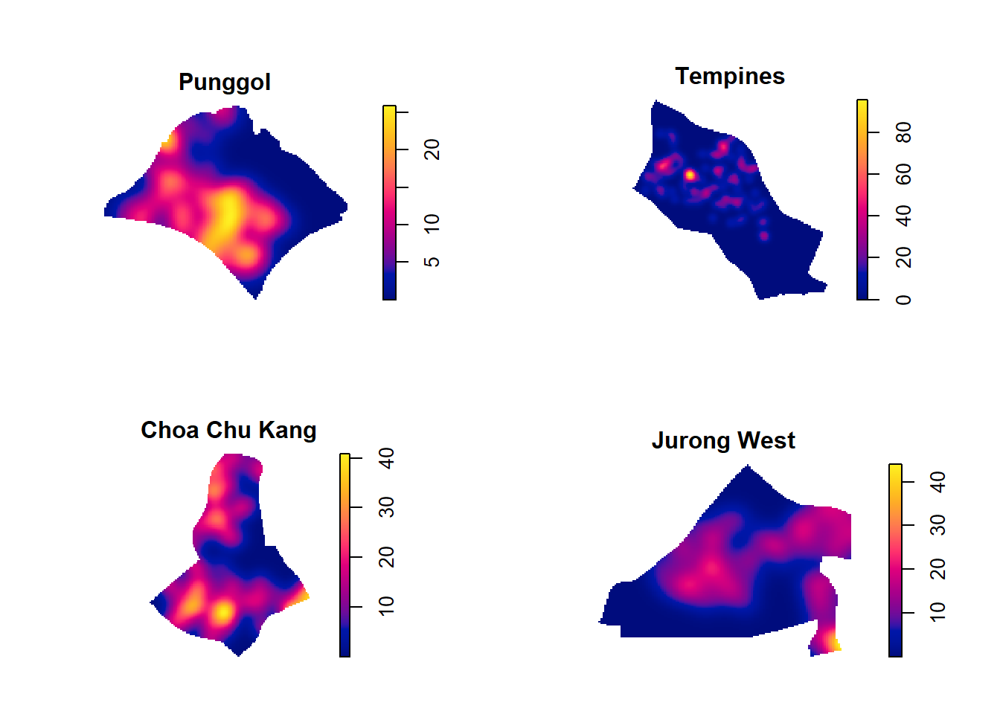
bs = mpsz_cl %>%
filter(PLN_AREA_N == "BISHAN")
bs_owin = as.owin(bs)
childcare_bs_ppp = childcare_ppp[bs_owin]
childcare_bs_ppp.km = rescale.ppp(childcare_bs_ppp, 1000, "km")
plot(density(childcare_bs_ppp.km,
sigma=bw.diggle,
edge=TRUE,
kernel="gaussian"),
main="Bishan")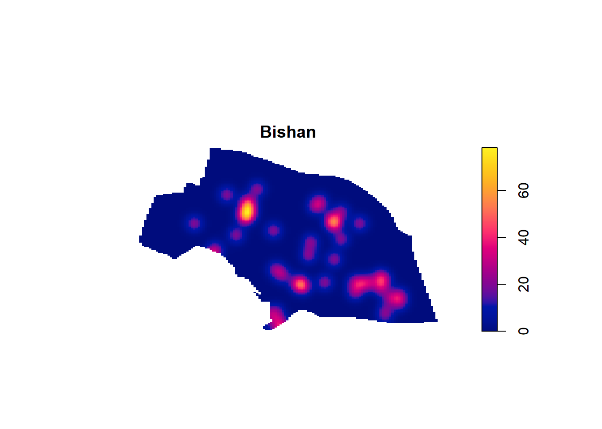
Added Bishan into the mix just to see another area beyond the four in the writeup - good to compare how density patterns differ across neighbourhoods with different housing types.
kde_childcareSG.cvl = density(childcareSG_ppp_km,
sigma=bw.CvL,
edge=TRUE,
kernel="gaussian")
par(mfrow=c(1,3))
plot(kde_childcareSG_km, main = "bw.diggle")
plot(kde_childcareSG.ppl, main = "bw.ppl")
plot(kde_childcareSG.cvl, main = "bw.CvL")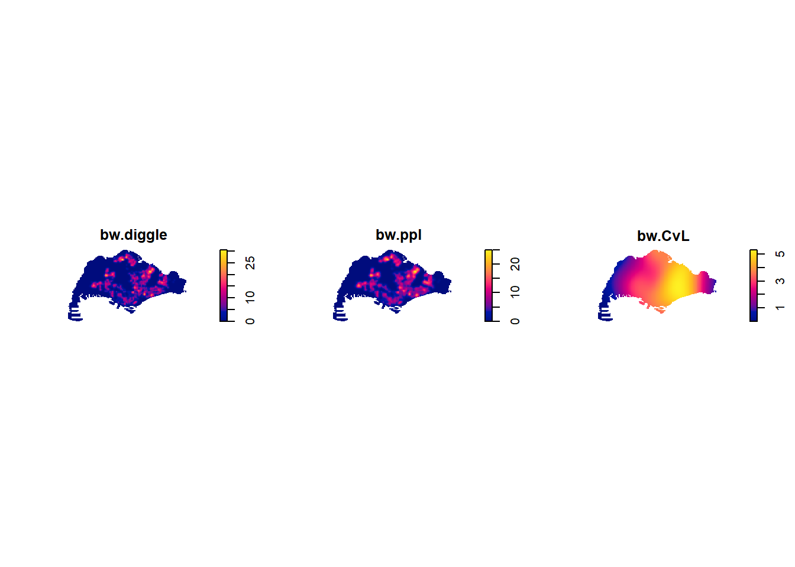
tm_shape(kde_childcareSG_bw_terra) +
tm_raster(col.scale =
tm_scale_continuous(
values = "brewer.reds"),
col.legend = tm_legend(
title = "Density values",
title.size = 0.7,
text.size = 0.7,
bg.color = "white",
bg.alpha = 0.7,
position = tm_pos_in(
"right", "bottom"),
frame = TRUE)) +
tm_graticules(labels.size = 0.7) +
tm_compass() +
tm_layout(scale = 1.0)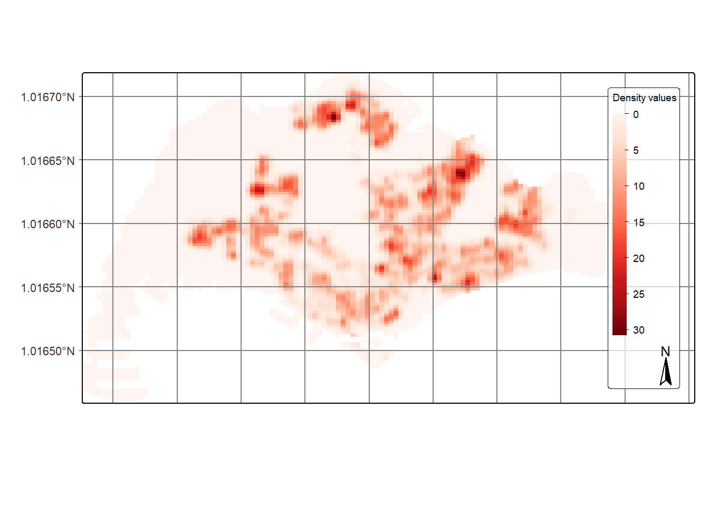
Just swapped the colour scheme here to see how it changes readability - viridis feels a bit easier to read for density gradients since it’s perceptually uniform, but reds might work better if you’re trying to draw attention to “hot” areas specifically.
set.seed(1234)G_CK = Gest(childcare_ck_ppp, correction = "border")
plot(G_CK, xlim=c(0,500))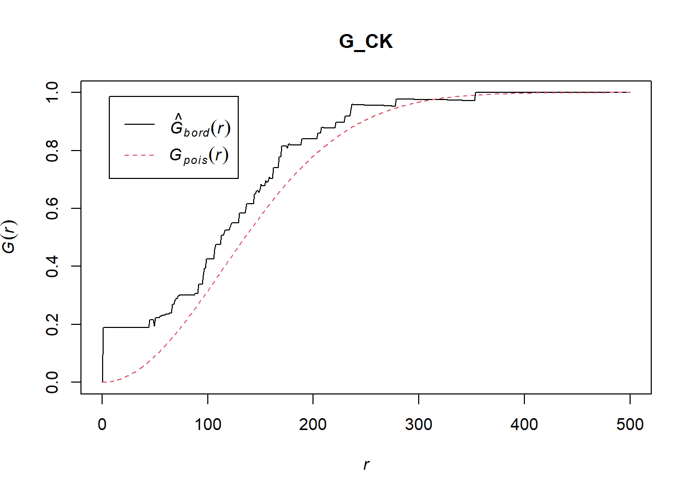
G_CK.csr = envelope(childcare_ck_ppp, Gest, nsim = 999)Generating 999 simulated realisations of CSR ...
1, 2, 3, ......10.........20.........30.........40.........50.........60..
.......70.........80.........90.........100.........110.........120.........130
.........140.........150.........160.........170.........180.........190........
.200.........210.........220.........230.........240.........250.........260......
...270.........280.........290.........300.........310.........320.........330....
.....340.........350.........360.........370.........380.........390.........400..
.......410.........420.........430.........440.........450.........460.........470
.........480.........490.........500.........510.........520.........530........
.540.........550.........560.........570.........580.........590.........600......
...610.........620.........630.........640.........650.........660.........670....
.....680.........690.........700.........710.........720.........730.........740..
.......750.........760.........770.........780.........790.........800.........810
.........820.........830.........840.........850.........860.........870........
.880.........890.........900.........910.........920.........930.........940......
...950.........960.........970.........980.........990........
999.
Done.plot(G_CK.csr)
G_tm = Gest(childcare_tm_ppp, correction = "best")
plot(G_tm)
G_tm.csr = envelope(childcare_tm_ppp, Gest, correction = "all", nsim = 999)Generating 999 simulated realisations of CSR ...
1, 2, 3, ......10.........20.........30.........40.........50.........60..
.......70.........80.........90.........100.........110.........120.........130
.........140.........150.........160.........170.........180.........190........
.200.........210.........220.........230.........240.........250.........260......
...270.........280.........290.........300.........310.........320.........330....
.....340.........350.........360.........370.........380.........390.........400..
.......410.........420.........430.........440.........450.........460.........470
.........480.........490.........500.........510.........520.........530........
.540.........550.........560.........570.........580.........590.........600......
...610.........620.........630.........640.........650.........660.........670....
.....680.........690.........700.........710.........720.........730.........740..
.......750.........760.........770.........780.........790.........800.........810
.........820.........830.........840.........850.........860.........870........
.880.........890.........900.........910.........920.........930.........940......
...950.........960.........970.........980.........990........
999.
Done.plot(G_tm.csr)
childcare_ck_ppp.km = rescale.ppp(childcare_ck_ppp, 1000, "km")kde_ck_adaptive = adaptive.density(
childcare_ck_ppp.km,
method="kernel")
par(mfrow=c(1,2))
plot(density(childcare_ck_ppp.km,
sigma=bw.diggle,
edge=TRUE,
kernel="gaussian"),
main="Fixed (bw.diggle)")
plot(kde_ck_adaptive, main="Adaptive")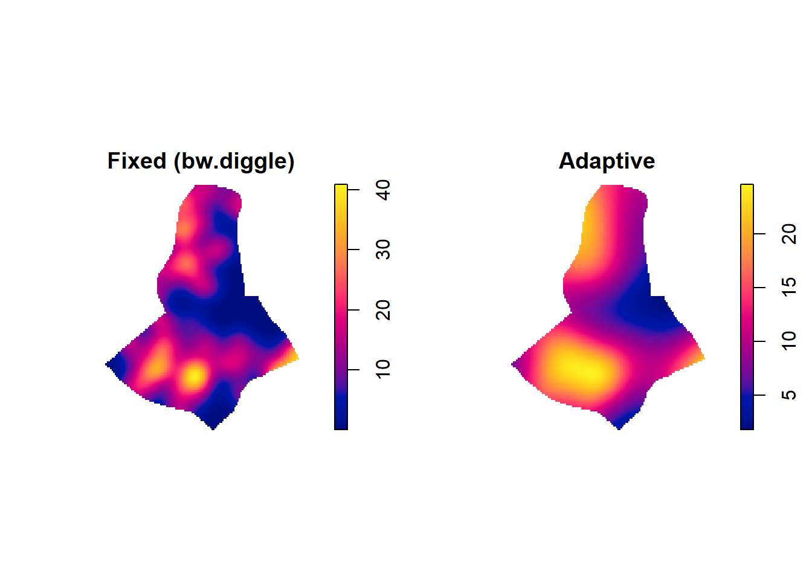
Zooming into just Choa Chu Kang, the adaptive method picks up on local hotspots that the fixed one glosses over — useful if you actually care about pinpointing exact clusters rather than just the general shape.
clarkevans.test(childcare_pg_ppp,
correction="none",
clipregion=NULL,
alternative=c("two.sided"),
nsim=999)
Clark-Evans test
No edge correction
Z-test
data: childcare_pg_ppp
R = 0.81698, p-value = 0.002969
alternative hypothesis: two-sidedclarkevans.test(childcare_jw_ppp,
correction="none",
clipregion=NULL,
alternative=c("two.sided"),
nsim=999)
Clark-Evans test
No edge correction
Z-test
data: childcare_jw_ppp
R = 0.68968, p-value = 4.772e-10
alternative hypothesis: two-sidedNow with all four planning areas tested, Choa Chu Kang and Tampines both show clustering, and it’s worth checking whether Punggol and Jurong West follow the same pattern or not - planned towns like Punggol might actually be more evenly distributed since childcare centres get planned in from the start.
Went through G, F, K and L functions for Choa Chu Kang and Tampines — all four are basically different lenses on the same question (are these points clustered or not), and they consistently point the same direction. Good sanity check that the earlier Clark-Evans results weren’t a fluke.